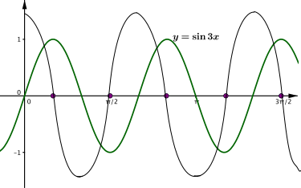

How does the function change as a increases? You might have talked about the period of the graph decreasing or, if you thought about it as a transformation, you might describe a stretch parallel to the x axis. What is the scale factor of the stretch?
Thinking about the tangent to the graph, you should notice that the gradient of the tangent is getting steeper as a increases. The height of the triangle doesn’t change, but when a=2, the base is half the original, and when a=3 the base is a third of the original. How much steeper is the gradient at these two points than when a=1?
Can you generalise some of your observations? As a increases, what happens to the x and y coordinates? What about the gradient?
Decide which of the following is the gradient function of sin3x and justify your answer.
cos3x
3cosx
3cos3x
Two possible ways to decide which is the gradient function are explored below.
If we start with two points P and Q, which lie on sinx and sinax respectively, we can compare Q to P as we transform the graph from sinx to sin3x.
The applet shows that the gradient of sin3x at Q is three times as steep as the gradient of sinx at P. As cosx is the derivative of sinx and has maximum and minimum values of 1 and −1, we can argue that our derivative will have maximum and minimum values of 3 and −3. This narrows our choice of gradient function to 3cosx or 3cos3x.
The graph of sin3x cycles three times as fast as the graph of sinx. We could think about this as a stretch of sinx, parallel to the x axis, scale factor 13. What is the relationship between the x values at P and Q? Does this help us eliminate any of the possible answers?
One way we might write our argument down using mathematical notation is:
ddx(sin3xQ)=3×ddx(sinxP)
The gradient function of sin3x at Q is three times the gradient function of sinx at P.
ddx(sin3xQ)=3×cosxP
We know the derivative of sinx is cosx, so the derivative of sinxP=cosxP.
ddx(sin3xQ)=3×cos3xQ
The relationship between the x values of P and Q is xP=3xQ.
Therefore the gradient function of sin3x is 3cos3x.
We could make a rough sketch of the gradient function by looking at when the gradient is positive, negative and zero. By marking the points where the gradient is zero, we can see that the gradient function will have the same period as sin3x, and that the gradient function must be a multiple of cos3x.

We need to think about what this multiple must be. If we compare the gradients of sin3x and sinx at (0,0), we can see that sin3x is steeper than sinx at this point. Therefore the gradient of sin3x at (0,0) is greater than 1.
This means that, from the options available, the gradient function of sin3x must be 3cos3x.
Alternatively, we might have estimated the gradient of sin3x at (0,0) by considering the gradient of the chord from (0,0) to (0.1,sin0.3).
After thinking about the different ways you could have got the answer, can you see the two effects that the value of a has in the applet below?
For any value of a, what is the gradient function of sinax (assuming a≠0)?